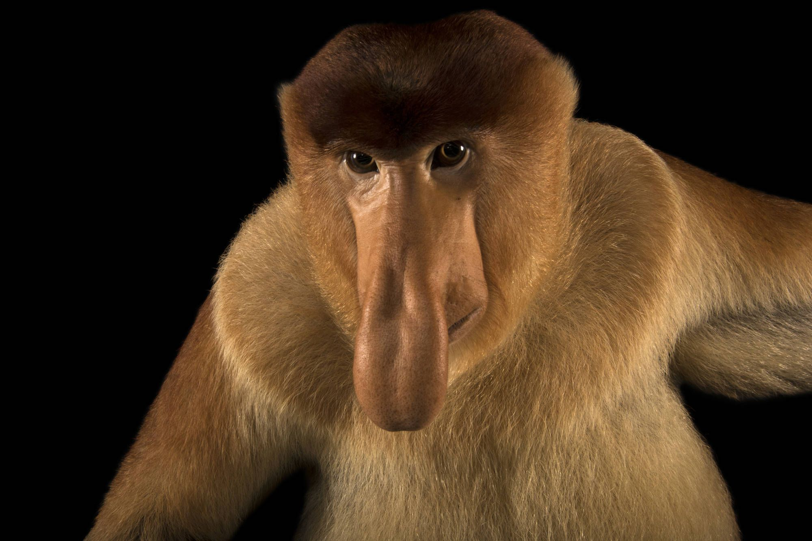
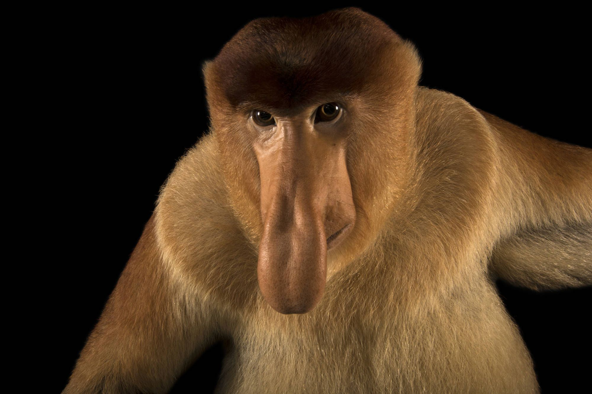

Egyedi megkülönböztető ismérve a hímek jócskán megnagyobbodott, esetenként 10 cm-nél is hosszabb orra, melynek evolúciós előnye tisztázatlan, de lehetséges, hogy a hosszú, elnyújtott, zengő orrhang képzéséhez kellhet. Az is lehet, hogy a nőstények szigorú szelekciós munkájának eredménye, melynek során mindig a különösen nagy orrú hímeket részesítették előnyben. A hímek nagy orra hasonló jelentőséggel bírhat, mint a szarvasok óriási agancsa vagy az oroszlánok sörénye. A nőstények és a fiatalok orra kisebb, felálló és pisze. Nagy hasukban rengeteg féle baktérium található, melyeknek a szerepe a táplálék erjesztése. A baktériumok hatástalanítanak néhány, a majmok táplálékában megtalálható mérget, így olyan leveleket is megehetnek, melyektől más állat meghalna.
A borneói nagyorrú majom (Nasalis larvatus) az egyik legkülönösebb kinézetű állat a világon. Méretüknek, nagy, kerek hasuknak és feltűnő színüknek köszönhetően is kitűnnek a többi főemlős közül, ami mégis igazán híressé teszi őket az a hatalmas, lógó orruk.
A borneói nagyorrú majom az egyik legnagyobb fán élő majom. A hím 73–76, a nőstény 54–64 centiméterre nőhet. A hím farokhossza 66-75, a nőstényé 52-62 centiméter. A hímek tömege 16–25 kg között mozog, a nőstények csak 7-12 kg-osak.
 

| Hím | Nőstény | |
|---|---|---|
| Méret (cm) | 73-76 | 54-64 |
| Farokhossz (cm) | 66-75 | 52-62 |
| Tömeg (kg) | 16-25 | 7-12 |